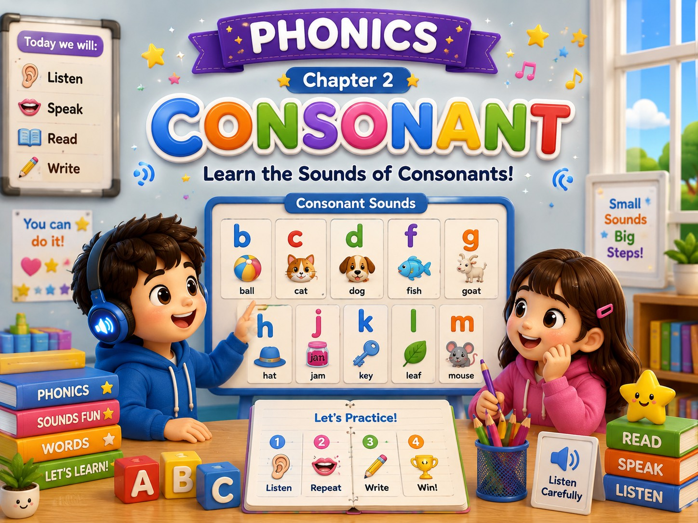

🗣️ บทเรียน: เสียงพยัญชนะเดี่ยว (Consonant Sounds)
Phonics หัวข้อที่ 2 · เตรียมพื้นฐานก่อนเข้าเรียน ม.4
🎯 จุดประสงค์การเรียนรู้
- ออกเสียงพยัญชนะทั้ง 21 ตัวในคำได้ถูกต้อง (แยกจาก "ชื่อเรียก" ตัวอักษร)
- แยกเสียง C และ G แบบแข็ง/อ่อนได้ตามกฎสระที่ตามหลัง
- ออกเสียง R, V, W ได้ถูกต้องตามแบบภาษาอังกฤษ (ไม่รัวลิ้นแบบไทย)
- ฟังและออกเสียงคำพยัญชนะเดี่ยวตามสำเนียงอังกฤษ พร้อมแยกเสียงเป็นส่วน ๆ ได้
🔊 กดปุ่มลำโพงเพื่อฟังเสียงคำศัพท์ภาษาอังกฤษ ฟังซ้ำได้ไม่จำกัด ปรับความเร็วช้า/ปกติได้ที่แถบมุมขวาล่าง

📖 กฎพิเศษ: C และ G มี 2 เสียง (แข็ง/อ่อน)
ตัวอักษร C และ G เป็นตัวเดียวที่มีเสียงเปลี่ยนไปตามสระที่ตามหลัง: ตามด้วย a, o, u → เสียงแข็ง (คะ/กะ) ตามด้วย e, i, y → เสียงอ่อน (ซะ/จะ)
| คำ | เสียง | ฟังเสียง |
|---|
cat
c-a-t → เคอะ-แอะ-เทอะ | แข็ง (คะ) | |
| city | อ่อน (ซะ) | |
| game | แข็ง (กะ) | |
| gym | อ่อน (จะ) | |
| girl | แข็ง (ข้อยกเว้น) | |
⚠️ กฎนี้ใช้ได้กับคำส่วนใหญ่ แต่มีคำยกเว้นบางคำ เช่น get, give, girl ที่ตามด้วย e/i แต่ยังออกเสียงแข็ง — ต้องจำแยกเป็นคำ ๆ ไป
🔤 ข้อสังเกตเพิ่มเติม
| ตัวอักษร | ข้อสังเกต | ฟังเสียง |
|---|
| Q | ไม่เคยอยู่ตัวเดียว ต้องมี U ตามเสมอ กลายเป็นเสียง "kw" | |
| X | ส่วนใหญ่อยู่ท้ายคำ ออกเสียงสั้น ๆ แค่ /ks/ ไม่ใช่อ่านเต็มว่า "เอ็กซ์" | |
| R | ลิ้นม้วนงอไม่แตะเพดาน ต่างจาก ร ไทยที่รัวลิ้น | |
| V vs W | V มีฟันบนแตะริมฝีปากล่าง ส่วน W แค่ห่อปากกลม ไม่มีฟันแตะเลย | |
🧩 คลังคำศัพท์ฝึกแยกเสียง (Word Bank)
กดปุ่ม 🔊 เพื่อฟังคำเต็ม กดปุ่ม 🔤 เพื่อฟังเสียงแยกส่วน แล้วตามด้วยคำเต็ม
🎒
b-a-g → เบอะ-แอะ-เกอะ
bag (แบ็ก)
กระเป๋า
🐕
d-o-g → เดอะ-เอาะ-เกอะ
dog (ด็อก)
หมา
🧑🌾
f-a-n → ฟ-แอะ-เนอะ
fan (แฟน)
พัดลม
👒
h-a-t → เฮอะ-แอะ-เทอะ
hat (แฮ่ท)
หมวก
🍞
j-a-m → เจ-แอะ-เมอะ
jam (แยม)
แยม
🦵
l-e-g → เลอะ-เอะ-เกอะ
leg (เล็ก)
ขา
🐷
p-i-g → เพอะ-อิ-เกอะ
pig (พิก)
หมู
🐭
r-a-t → ร-แอะ-เทอะ
rat (แร่ท)
หนู
☀️
s-u-n → ซ-อะ-เนอะ
sun (ซัน)
พระอาทิตย์
💧
w-e-t → เวอะ-เอะ-เทอะ
wet (เว็ท)
เปียก
💡 เสียงแยกส่วน (🔤) เป็นเสียงโดยประมาณจากระบบสังเคราะห์เสียงของเบราว์เซอร์ ฟังปุ่ม "คำเต็ม" เพื่อเสียงที่ถูกต้องแม่นยำที่สุดเสมอ
💬 ฝึกอ่านประโยค
I have a red bag.
ฉันมีกระเป๋าสีแดง
The dog can run.
หมาวิ่งได้
She has a pet pig.
เธอมีหมูเลี้ยง
🧠 เทคนิคการจำ
💡 จำกฎ c/g ด้วยคำสั้น ๆ: "AOU หนักแน่น (แข็ง), EIY อ่อนโยน (อ่อน)"
💡 Q ไม่เดินคนเดียว: จำภาพ Q จูงมือ U เดินไปด้วยกันเสมอ
💡 ใช้เสียงสัตว์แทนเสียงยาก: Z = เสียงยุงบิน "zzzz", S = เสียงงู "sssss"